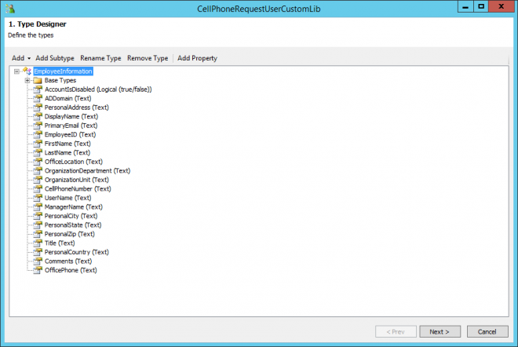
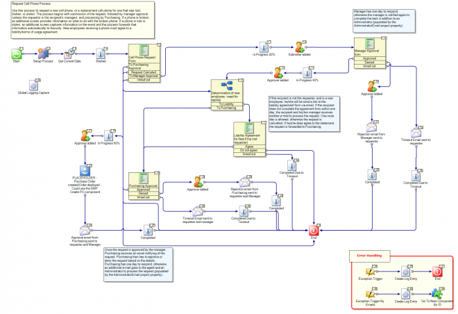

Request Cell Phone

[Install Drive]:\Program Files\Symantec\Workflow\Designer\Examples\
Description:
Use this process to request a new cell phone, or a replacement cell phone for one that was lost, broken, or stolen. The process begins with submission of the request, followed by manager approval (unless the requestor is the recipient's manager), and processing by Purchasing. If a phone is broken, an additional screen provides information on what to do with the broken phone. If a phone is lost or stolen, an additional screen captures information on the event and the process forwards that information automatically to Security. New employees receiving a phone must agree to a liability/terms of usage agreement.
Author mail:
nancy_mitchelmore@symantec.com
Process Prefix: "ITSR-"
Documentation
| This document provides an overview of a workflow project, that, when deployed, will allow a user to request a new or replacement cell phone. The roles that are significant to this process include management (for approval of the request), security (for notification of lost or stolen devices), asset management (for receipt of broken devices), purchasing (for final approval and placement of the order), and an Administrator (for handling of the manager and Purchasing approval upon timeout). These roles are easily changed; for example, instead of the Purchasing department handling the request, replace that assignment with the Accounting or Inventory department. Process Structure This process is structured to include an approval process; therefore a manager hierarchy should be in place. An additional workflow is included for a Purchasing (or Finance or Inventory) approval. Also included in this process is a liability agreement for cell phones requested for new users. This text and the form can be omitted or modified based on need. If a phone is broken, a screen provides instructions on what to do with the broken phone (also customizable). If a phone is lost or stolen, part of the workflow becomes submitting details on the event and automatic notification to Security. This process is intended to be dependent upon data from the Notification Server. Currently, there are placeholders for data retrieval; both the logged in user (requester) and the “search for user” data are hard-coded in Add New Data Element components within the Cell Phone Request Form Dialog Workflow component . You must also utilize an email/Exchange server. Step 1a: Requester fills out the request form The requester accesses the Request Cell Phone form and can request a new or replacement phone for him/herself or someone else. This may be applicable in the event that a Manager/Lead needs to acquire a cell phone for a new employee just joining the company . Required fields are denoted by a red asterisk. The requester can select the make and model desired, indicate the date the phone is required, and provide any additional details, as applicable. The requester must select a reason for the request and indicate where the phone should be delivered, if approved for ordering. The requester can also attach any pertinent documentation, for example, if he/she would like to request a phone that is not a standard inventory item, he/she may want to attach a price quote document. (The Make and model drop-down menu is populated by hard-coded values.) Once the required details are filled in the Submit button is clicked, the requester will be directed to a secondary form. Step 1b: Requester fills out the secondary form Contingent upon the reason for the cell phone request, the user will be directed to one of the following secondary forms: New – This form is meant to capture data such as whether or not the cell phone is being requested for a new employee, if there is an existing number to port, and the preferred service provider. (The preferred service provider drop-down menu is populated by hard coded values in the form.) If the cell phone is requested for a new employee, the employee will be directed to a Liability Agreement. Clicking I Agree in this form will allow the process to continue, otherwise, the request is canceled and the process ends. If the recipient is not the requester, but is a new employee, the recipient will receive an e-mail with a link to the Liability Agreement after the Manager approves the request.* The Liability Agreement must be addressed within one day, otherwise the task times out and is reassigned to the recipient for one more day (and the manager is CCed on the notification e-mail). If after another day the task is not complete, the request is cancelled and the requestor and manager are notified. Broken – If the request is being made because the user’s existing cell phone is now broken, the user will be provided with the address for Asset Management and instructions to send in the broken device. Lost/Stolen – If the request is being made because the existing phone has been lost or stolen, the user will be required to comment on where the event (of the loss or theft) occurred. An email is sent to the Security Office with the details of the event. Step 2: Request is sent for Manager approval Once all of the initial request details have been gathered and submitted, the manager receives an e-mail with a link to approve the request. The Manager will be required to approve the request through a form in which the request details are laid out. The default timeout allotted is one day. After one day, the Administrator is added to the task (along with the manager again). One more day is allowed for the approval after the timeout. If the additional day passes, the requester is notified that the approval was not processed and the request is cancelled. If attachments were added to the initial request form, the Manager will be able to view them from this approval form. If the Manager grants approval, the process moves forward to Purchasing/Finance. In the event that the request is being submitted by a 3rd party and the recipient is a new employee, the recipient will receive an email with a link to the Liability Agreement form. Clicking I Agree to this Liability Agreement will move the process to the Purchasing approval phase. If the Manager rejects the request, the requester/recipient is notified of this outcome via email. Note: A placeholder currently exists to represent the extraction of manager and department data by user. Step 3: Request is sent for Purchasing approval Once the Manager has approved the request, the Purchasing/Finance Office is notified by e-mail to process the request. Purchasing will be able to view all of the request details, including the delivery location information, and determine whether or not approval for ordering will be granted. Regardless of the decision, the requester will receive an email that will inform him/her of the outcome of this step. After one day, the Administrator is added to the task (along with the Purchasing agent again). One more day is allowed for the approval after the timeout. If the additional day passes, the requester and his/her manager is notified that the approval was not processed and the request is cancelled. Note: If Purchasing approves the request, a purchase order will be created. This is currently represented with a placeholder and can be configured based on the specifics of your organization. Note: Part of the details sent to Purchasing is a notation for the delivery location. This will be pulled from the NS or Active Directory. This data extraction is currently represented with a placeholder within the Purchasing Approval dialog workflow. |
|---|
Packages
 CellPhoneRequestUserCustomLib.package
CellPhoneRequestUserCustomLib.package
This contains the Data Type to store your Employee Information in.

 Symantec.Workflow.RequestCellPhone.package
Symantec.Workflow.RequestCellPhone.package
First we shall look at the Business Model.

There is only one main Model, Primary.

Dialog Workflow(s)
- Cell Phone Request Form
- Purchasing Approval
- Once the request is approved by the manager, Purchasing receives an email notifying of the request. Purchasing then has to approve or deny the request based on the details. Purchasing has one day to respond, otherwise an additional e-mail goes to the agent and an Administrator to process the request (populated by the AdministratorEmail project property).
- Liability Agreement for New Emp (not requester)
- If the recipient is not the requester, and is a new employee, he/she will be send a link to the liability agreement form via email. If the recipient does not complete the agreement form within one day, the recipient and his/her manager receives another e-mail to process the request. One more day is allowed, otherwise the request is cancelled. If he/she does agree to the statement, the request is forwarded to Purchasing.
- Manager Approval form
- Manager has one day to respond, otherwise the manager is notified again to complete the task in addition to an Administrator (populated by the AdministratorEmail project property).
Things to Implement yourself
Approval
- PLACEHOLDER - Purchase Order created/Order deployed - Could use the SMP Create PO component
Properties
| Name | Value |
|---|---|
| Security1Email | Security1@symantec.com |
| Purchasing1Email | Purchasing1@symantec.com |
| Security1 | Security |
| Purchasing1 | Purchasing |
| SMTPServer | localhost |
| MailFromAddress | no-reply@symantec.com |
| AdministratorContactName | Administrator |
| AdministratorContactInfo | 123.456.7890 |
| CorporateSprintAccountNumber | 890-374856 |
| CorporateSprintAccountRepName | Jane Smith |
| CorporateSprintAccountRepNumber | 800-333-6785 |
| CorporateSprintAccountVerificationCode | ### |
| AdministratorContactEmail | Administrator@symantec.com |
| CriticalErrorName | ProcessAdmin |
| CriticalErrorInfo | ProcessAdmin@symantec.com |
Global Data
| Name | Value |
|---|---|
| DocumentCategoryID | 1 |
Documented on Connect by: